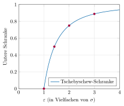

Aufgabe 6.4
Welchen Einfluss auf die Ungleichung hat die Zahl $\varepsilon$?
- Die Tschebyschew-Ungleichung lautet: $P(|X-\mu| \geq \varepsilon) \leq \frac{\operatorname{Var}(X)}{\varepsilon^2}$
- Umgeformt: $P(|X-\mu| < \varepsilon) \geq 1 - \frac{\operatorname{Var}(X)}{\varepsilon^2}$
- Untersuchen Sie, was bei kleinem bzw. grossem $\varepsilon$ passiert
- Überlegen Sie, wann die Ungleichung eine sinnvolle Aussage liefert
Die Tschebyschew-Ungleichung:
Für eine Zufallsgrösse $X$ mit Erwartungswert $\mu$ und Varianz $\operatorname{Var}(X) = \sigma^2$ gilt: $$P(|X - \mu| < \varepsilon) \geq 1 - \frac{\sigma^2}{\varepsilon^2}$$
Diese Ungleichung gibt eine untere Schranke für die Wahrscheinlichkeit an, dass $X$ in einem $\varepsilon$-Intervall um den Erwartungswert liegt.
Grafische Darstellung des Einflusses von $\varepsilon$:

Die y-Achse zeigt die untere Schranke für $P(|X-\mu| < \varepsilon)$
Markierungen bei: $\sigma$, $\sqrt{2}\sigma$, $2\sigma$, $3\sigma$
Erklärung der Visualisierung:
Wie liest man diese Grafik?
- Die x-Achse zeigt $\varepsilon$ als Vielfache der Standardabweichung $\sigma$
- Die y-Achse zeigt die untere Schranke für die Wahrscheinlichkeit, dass $X$ im Intervall $[\mu - \varepsilon, \mu + \varepsilon]$ liegt
- Die blaue Kurve ist die Funktion $f(\varepsilon) = 1 - \frac{\sigma^2}{\varepsilon^2}$ für $\varepsilon > \sigma$
- Die roten Punkte markieren wichtige Werte:
- Bei $\varepsilon = 1\sigma$: Schranke = 0 (keine Garantie)
- Bei $\varepsilon = \sqrt{2}\sigma$: Mindestens 50% im Intervall
- Bei $\varepsilon = 2\sigma$: Mindestens 75% im Intervall
- Bei $\varepsilon = 3\sigma$: Mindestens 88.9% im Intervall
- Je weiter rechts auf der x-Achse (grösseres $\varepsilon$), desto höher die garantierte Mindestwahrscheinlichkeit
- Die Kurve nähert sich asymptotisch dem Wert 1, erreicht ihn aber nie
Analyse des Einflusses von $\varepsilon$:
Fall 1: Kleines $\varepsilon$
- Wenn $\varepsilon$ klein ist, wird $\varepsilon^2$ noch kleiner
- Der Bruch $\frac{\sigma^2}{\varepsilon^2}$ wird gross
- Die untere Schranke $1 - \frac{\sigma^2}{\varepsilon^2}$ wird klein oder sogar negativ
- Für $\varepsilon \leq \sigma$ ist die Schranke nicht aussagekräftig
Fall 2: Grosses $\varepsilon$
- Wenn $\varepsilon$ gross ist, wird $\varepsilon^2$ sehr gross
- Der Bruch $\frac{\sigma^2}{\varepsilon^2}$ wird klein
- Die untere Schranke $1 - \frac{\sigma^2}{\varepsilon^2}$ nähert sich 1
- Fast die gesamte Wahrscheinlichkeitsmasse liegt im Intervall
Konkrete Beispiele:
Sei $X$ eine Zufallsgrösse mit $\mu = 100$ und $\sigma = 10$.
| $\varepsilon$ | Intervall | Tschebyschew-Schranke | Interpretation |
| $10 = 1\sigma$ | $[90, 110]$ | $\geq 0$ | trivial |
| $14.14 = \sqrt{2}\sigma$ | $[85.86, 114.14]$ | $\geq 0.5$ | 50% garantiert |
| $20 = 2\sigma$ | $[80, 120]$ | $\geq 0.75$ | 75% garantiert |
| $30 = 3\sigma$ | $[70, 130]$ | $\geq 0.889$ | 89% garantiert |
| $40 = 4\sigma$ | $[60, 140]$ | $\geq 0.9375$ | 94% garantiert |
Vergleich mit der Normalverteilung:
Für eine normalverteilte Zufallsgrösse gelten die bekannten Regeln:
- $P(|X - \mu| < 1\sigma) \approx 0.683$ (Tschebyschew: $\geq 0$)
- $P(|X - \mu| < 2\sigma) \approx 0.954$ (Tschebyschew: $\geq 0.75$)
- $P(|X - \mu| < 3\sigma) \approx 0.997$ (Tschebyschew: $\geq 0.889$)
Die Tschebyschew-Ungleichung ist universell gültig, aber oft konservativ.
Zusammenfassung des Einflusses:
- Je kleiner $\varepsilon$, desto schwächer wird die Aussage der Ungleichung
- Je grösser $\varepsilon$, desto stärker wird die Aussage
- Die Ungleichung liefert nur sinnvolle Schranken, wenn $\varepsilon > \sigma$
- Für $\varepsilon = k\sigma$ mit $k > 1$ gilt: $P(|X - \mu| < k\sigma) \geq 1 - \frac{1}{k^2}$
Praktische Anwendung:
Beispiel Qualitätskontrolle: Eine Maschine produziert Schrauben mit mittlerer Länge $\mu = 50$ mm und Standardabweichung $\sigma = 0.5$ mm.
Die Tschebyschew-Ungleichung garantiert:
- Mindestens 75% der Schrauben liegen im Intervall $[49, 51]$ mm ($\varepsilon = 2\sigma = 1$ mm)
- Mindestens 89% der Schrauben liegen im Intervall $[48.5, 51.5]$ mm ($\varepsilon = 3\sigma = 1.5$ mm)
Diese Garantien gelten unabhängig von der tatsächlichen Verteilung der Schraubenlängen!